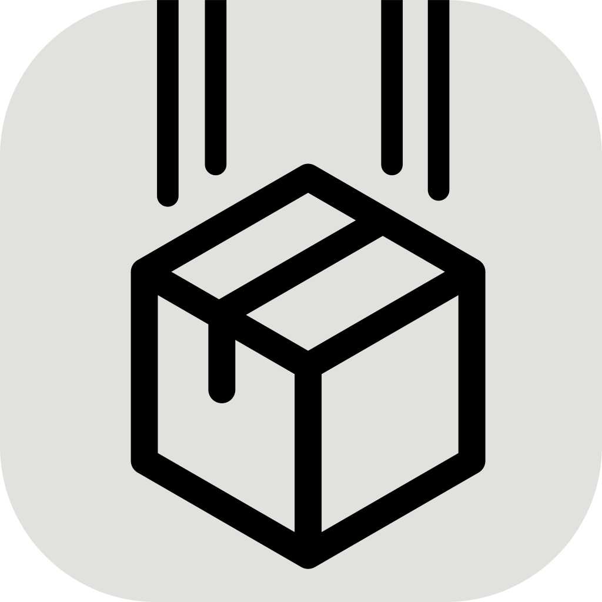

LANDrop
Vous avez besoin du client LANdrop pour Windows pour envoyer des fichiers
Si vous l'avez déjà installer, lancer l'application.
Sinon vous pouvez
Télécharger l'application
Aller dans les notifications pour terminer l'installation.